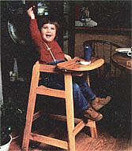
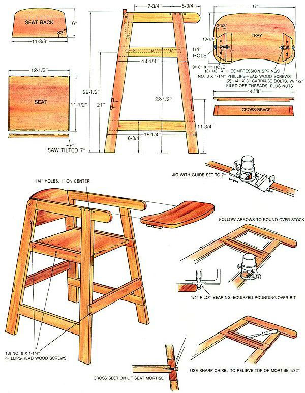

When your youngster is ready to take up a spoon, you can personalize the big event.
Ask experienced parents what qualities they'd most appreciate in a highchair, and there's a good chance you'll hear three points mentioned over and over: stability, ease of cleaning, and a tray that is secure but simple to install. Unlike many commercial models that the parents among us have known, the highchair you see here has survived the assault of a two-and-a-half-year-old without tipping, has shed flying applesauce, and sports a tray that comes and goes with ease. What's more, the construction involves no turnings or exotic joints; it would be possible, in fact, to build it solely with hand tools and sufficient dedication.
Most parents find it handy to be able to get the arms of a highchair - without the tray - under the kitchen or dining room tabletop, so the child can eat with the rest of the family. For that reason, consider measuring to the underside of your table and adjusting the leg dimensions in our drawing accordingly.
All told, you'll need about 24 linear feet of 3/4" X 2-1/8" framing stock and another 4 feet of wider material for the seat, seat back, and tray. We used locally milled red oak, but there are certainly lots of other good options. Bear in mind, though, that softwoods will be more difficult to joint and rout without splintering them.
All but one of the chair's joints are cross or end-lapped, and made 7 degrees off perpendicular. The taper gives the chair a sturdy footing at the floor and a child-proportioned seat. Don't be intimidated by the off-square construction; a simple jig for a router or a carefully set table-saw miter gauge will allow you to repeat the cuts with accuracy. If you do decide to use a router, leave about 2" of extra length for each end-lap joint. The extra material will brace the router while you cut the joint, and it can be trimmed off later.
To keep the chair's construction uncluttered and to prevent warping, the seat is let into a 1/4"-deep, 3/4"-wide mortise in each side frame. Just cut the mortise square to the frame, and relieve the top of the slot about 1/32" with a chisel to accommodate the off-perpendicular angle. When it comes time to crosscut the seat, however, it's worth the trouble to tilt the saw 7° off perpendicular so that the tenon will seat squarely in the mortise for good glue adhesion.
It's probably easiest to cut the mortise on a router table by drilling a lead hole for the bit. Unless you have a very powerful router, though, don't expect to remove all the material in one cut. As an alternative, you could do the job on the table saw by lowering the stock onto a dado and then cleaning out the ends with a chisel. This is a fairly hairy operation that shouldn't be attempted without appropriate jigs and feather boards. In the end, it might be quicker to cut the mortises by hand with a chisel than to set up for either the router or the table saw.
Glue the side frames together first, clamping each joint to ensure a good bond. (There's plenty of surface area so screws aren't really necessary.) Once the glue has had time to set, round the front and back of the arms with a coping, saber, or band saw.
Next, round over all the edges to protect small hands from splinters. The quickest method is to use a router, but unless you have an extraordinarily steady hand, you'll find it to be just about impossible to avoid burning hardwood with a standard rounding-over bit. Therefore, a 3/8" rounding-over (or cornerbead) carbide bit with a pilot bearing is highly recommended for this job.
The last component you need for assembly is the seat back. Use the bottom dimension provided in the drawing, with your tablesaw miter gauge set at 83°, to cut out a polygon. Then, in the top of the piece, saw an arc that pleases your eye. Sand out the major irregularities your saw left in the curve, and round over the front and back, stopping short of the sides by about 1/4". It's safer to sand this last bit of curve to blend well with the flat, butted sides.
Set the seat and cross braces in place temporarily, and locate the position of the chair's back. Then clamp everything temporarily while you drill and countersink the screw holes for the butted back, the mortised seat, and the cross braces. Pop the clamps back off, apply glue, reassemble, reclamp, set the screws, and let the assembly sit overnight.
For the sake of appearance and to avoid traps for mini-compost piles of spilled food, all of the screw holes should be plugged. Be sure you don't countersink any deeper than about 1/8" on the cross braces or you'll come through the joint. If you use Phillips-head No. 8 X 1-1/4" screws, you should be able to apply enough torque to seat them firmly into the bottom of the screw holes. Nonetheless, commercial screw-hole plugs will have to be trimmed flush with a sharp chisel.
The dimensions we used for the tray were acquired by tracing around a commercial unit; you might find it easier to do the same, rather than try to work from the drawing. The catches are made from filed-down 1/4" carriage bolts with nuts and compression springs. The 3/4" stock in which they ride also helps brace the tray and limit warping. When drilling the braces, first bore the 9/16" hole, as shown in the drawing. Then use the center hole left by the 9/16" bit to start the 1/4" hole. The chair arms make a handy jig for positioning the braces on the underside of the tray.
Once you've assembled the tray, you can use it to locate the holes in the arms. Remove the carriage bolts from the braces, and set the tray down on the arms so that the holes are 9" in front of the seat back. Push a 16d nail through each hole, and give it a light tap to mark the spot. You can repeat the process three more times at 1" intervals, and then bore the 1/4" X 3/8"-deep holes.
Finish is a matter of personal preference, but the abuse that a highchair sees offers a compelling argument for polyurethane varnish. A coat of Minwax natural stain beforehand will help make up for the finish's lack of grain enhancement. We used three coats of satin polyurethane varnish over the stain.
If you're just starting a family, now's the time to put your youngster in a highchair of your own crafting. This design should be durable enough to survive a growing brood. And if you wait till the younger brothers and sisters arrive, you'll no doubt be hard-pressed to find the time to build it!
|
 |
 |
|